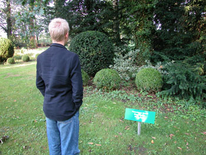
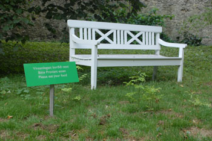

|
|
|
NEUE KUNST IN ALTEN GÄRTEN
27. August – 8. Oktober 2006
Antje Bromma
Susan Donath
Hlynur Hallsson
Peter Lundberg
Reiner Maria Matysik
Rita McBride
Uwe Schinn
Sebastian Schrader
Alexander Steig
Hina Strüver
Matten Vogel
Jürgen Witte
|
Winterstra§e 23, 30989 Gehrden-Lenthe
Öffnungszeiten:
Samstag und Sonntag 11.00 – 17.00 Uhr
Führungen:
Samstag und Sonntag um 15.00 Uhr.
Telefonische Vereinbarung unter 05108-3489 kontakt@neue-kunst-in-alten-gaerten.de
www.neue-kunst-in-alten-gaerten.de
Sehr geehrte Damen und Herren, liebe Freunde, die zweite Ausstellung zeigt neue künstlerische Positionen in den Parks der beiden Rittergüter in Lenthe. Hierzu laden wir Sie herzlich ein. Die Vernissage am Sonntag, den 27.August 2006, beginnt um 11.00 Uhr auf dem Untergut. Carsten Ahrens, Direktor Neues Museum Weserburg Bremen, wird in die Ausstellung einführen. Zur Ausstellung erscheint ein Katalog.
Auflage limitierten Ausweise erhältlich.
|
 |
 |